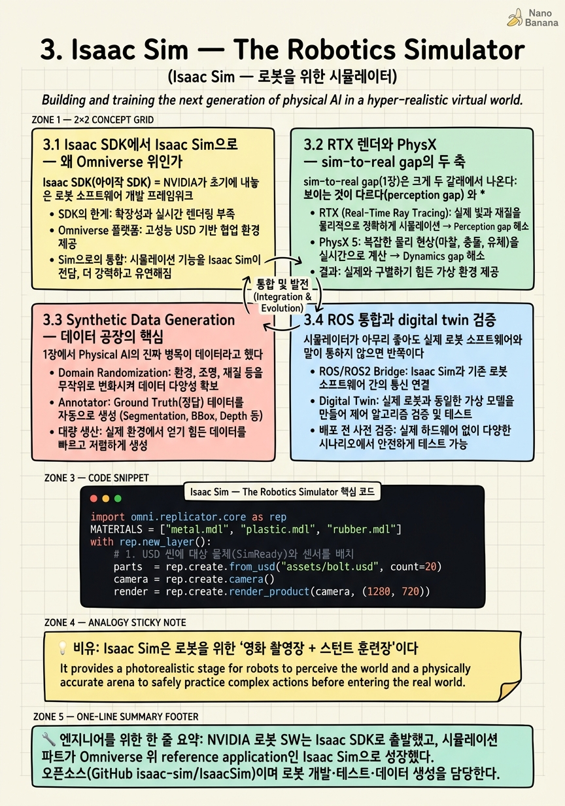

Isaac Sim — The Robotics Simulator

🎯 학습 목표
- Isaac Sim이 Omniverse 위에 서 있는 이유와 이점을 안다
- RTX 렌더·PhysX가 sim-to-real에 주는 영향을 설명한다
- synthetic data generation(SDG) 파이프라인의 역할을 이해한다
- ROS/ROS2 통합과 digital twin 검증의 의미를 안다
- Isaac Sim이 Isaac Lab·Cosmos와 어떻게 연결되는지 그린다
2장에서 Omniverse/OpenUSD라는 substrate를 깔았다. 이제 그 위에 로봇을 위한 첫 번째 실제 애플리케이션이 올라간다 — Isaac Sim 이다. 1장의 three computers 중 '시뮬레이션 컴퓨터'가 로봇에 대해 구체적으로 무엇을 하는지가 이 챕터다.
Isaac Sim은 처음부터 시뮬레이터였던 게 아니다. NVIDIA의 로봇 소프트웨어는 원래 Isaac SDK 라는 로봇 앱 개발 프레임워크로 출발했고, 시뮬레이션 파트가 Omniverse 위에 세운 별도의 reference application, 즉 Isaac Sim 으로 분화·성장했다. 지금은 오픈소스(GitHub isaac-sim/IsaacSim)로 공개되어 있다.
Isaac Sim이 하는 일은 한 문장으로 '로봇을 물리 기반 가상 세계에서 개발·테스트하고, sim-to-real을 검증하며, 대량의 synthetic data를 찍어내는 것'이다. 이를 위해 세 개의 엔진 — RTX 렌더(빛), PhysX(물리), Replicator 기반 SDG(라벨된 데이터) — 이 OpenUSD 씬 위에서 함께 돈다. 이 챕터는 그 세 엔진이 왜 sim-to-real gap과 직결되는지, 그리고 Isaac Sim이 위로는 Isaac Lab(4장)·Cosmos(5장), 옆으로는 ROS 생태계와 어떻게 물리는지를 해부한다.
핵심 내용
3.1 Isaac SDK에서 Isaac Sim으로 — 왜 Omniverse 위인가
Isaac SDK(아이작 SDK) = NVIDIA가 초기에 내놓은 로봇 소프트웨어 개발 프레임워크. 인식·계획·제어 모듈을 조립해 로봇 앱을 만드는 도구 모음이었다.
여기서 시뮬레이션 부분이 갈라져 나와 성장한 것이 Isaac Sim(아이작 심) 이다.
Isaac Sim = Omniverse 위에 세운 로봇 시뮬레이션 reference application. 오픈소스이며(GitHub isaac-sim/IsaacSim), 로봇을 물리 기반 가상환경에서 개발·테스트·검증하고 대량의 synthetic data를 생성하는 것이 목적이다.
'reference application'이라는 표현이 중요하다. Isaac Sim은 완결된 폐쇄 제품이 아니라, Omniverse의 기능(USD·RTX·PhysX·Replicator)을 로봇용으로 조립해 보여주는 참조 구현이다. 그래서 사용자가 필요에 맞게 확장·개조할 수 있다.
Isaac Sim이 자기만의 엔진을 새로 만들지 않고 Omniverse 위에 선 것의 이점은 2장의 substrate 논리가 그대로 실현된 것이다.
-
공통 씬 포맷(OpenUSD): 로봇·환경·SimReady asset을 USD로 표현하므로, 2장에서 만든 asset이 그대로 통한다. URDF/MJCF 같은 로봇 서술 포맷을 import해 USD로 변환할 수도 있다.
-
RTX 렌더 재사용: 사진처럼 사실적인 센서 이미지를 공짜로 얻는다.
-
PhysX 물리 재사용: 강체·관절·접촉 물리를 검증된 엔진으로 돌린다.
-
상위/하위 연결: 같은 USD 씬이 Isaac Lab(학습)으로, Cosmos(생성 증강)로, ROS(실로봇 스택)로 이어진다.
통찰: 만약 Isaac Sim이 독립 시뮬레이터였다면 렌더·물리·씬 포맷을 다 자체 개발하고 상위 도구와의 연결을 매번 다시 짜야 했을 것이다. Omniverse 위에 선 덕에 Isaac Sim은 '로봇용 조립'에만 집중하고 나머지는 substrate에서 상속받는다. 이것이 NVIDIA 수직 통합이 개발 속도로 나타나는 지점이다.
3.2 RTX 렌더와 PhysX — sim-to-real gap의 두 축
sim-to-real gap(1장)은 크게 두 갈래에서 나온다: 보이는 것이 다르다(perception gap) 와 움직이는 것이 다르다(dynamics gap). Isaac Sim은 각각을 RTX 렌더와 PhysX로 공략한다.
RTX 렌더 — perception gap 공략. RTX는 NVIDIA의 실시간 ray tracing 렌더러다. 로봇의 카메라가 시뮬레이션에서 보는 이미지가 실제 카메라 이미지와 최대한 가깝도록, 물리 기반 조명·그림자·반사·재질(PBR)을 사실적으로 렌더한다.
왜 이게 중요한가? 로봇의 인식 모델(vision)은 픽셀을 먹고 자란다. 시뮬레이션 이미지가 만화처럼 밋밋하면, 거기서 학습한 vision 모델이 실제 카메라의 복잡한 조명·반사·노이즈 앞에서 무너진다. RTX의 사실적 렌더는 이 perception gap을 좁힌다. Isaac Sim은 RGB뿐 아니라 depth·semantic segmentation·instance segmentation·LiDAR 같은 multi-sensor 출력을 동시에, 그리고 완벽한 ground-truth 라벨과 함께 뽑아낸다.
PhysX — dynamics gap 공략. PhysX(피직스엑스) = NVIDIA의 GPU 가속 물리 엔진. 강체 역학, 관절(joint)·조인트 제약, 마찰·접촉, 그리고 로봇 팔·다리의 articulated body를 시뮬레이션한다.
로봇 정책은 물리 위에서 학습된다. PhysX가 접촉·마찰·관성을 실제에 가깝게 풀지 못하면, 시뮬에서 완벽히 걷던 휴머노이드가 실물에서 넘어진다 — dynamics gap이다. GPU 가속이 핵심인 이유는 강화학습이 수천 개의 로봇을 병렬로 굴려야 하기 때문인데, 이 대규모 병렬 물리가 4장 Isaac Lab의 토대가 된다.
두 엔진의 역할을 정리하면 이렇다.
| 엔진 | 공략하는 gap | 무엇을 사실적으로 | 학습에 주는 것 |
|---|---|---|---|
| RTX 렌더 | perception gap | 빛·재질·센서 이미지 | 사실적 vision 입력 + GT 라벨 |
| PhysX | dynamics gap | 접촉·마찰·관절 역학 | 물리적으로 유효한 rollout |
핵심 통찰: Isaac Sim의 가치는 '예쁜 그림'이 아니라 perception gap과 dynamics gap을 동시에, 하나의 USD 씬 위에서 좁힌다 는 데 있다. 렌더와 물리가 같은 SimReady asset(2장)을 공유하기 때문에, 보이는 것과 움직이는 것이 일관된다.
3.3 Synthetic Data Generation — 데이터 공장의 핵심
1장에서 Physical AI의 진짜 병목이 데이터라고 했다. Isaac Sim에서 그 병목을 직접 공략하는 기능이 Synthetic Data Generation(SDG) 이고, 그 도구가 Replicator(리플리케이터) 다.
Synthetic Data Generation(합성 데이터 생성) = 시뮬레이션 안에서 이미지·센서 데이터와 그에 대한 완벽한 ground-truth 라벨(bounding box, segmentation, depth, pose 등)을 자동으로 대량 생성하는 것.
SDG가 실세계 데이터 수집을 이기는 두 가지 이유가 있다.
-
라벨이 공짜다: 실세계에서는 사람이 손으로 bounding box를 그리고 segmentation을 칠해야 한다. 시뮬레이션은 물체의 정확한 위치·형상·클래스를 이미 알고 있으므로, 픽셀 단위로 완벽한 라벨을 즉시 뽑는다. 사람 라벨러의 오류도, 비용도 없다.
-
domain randomization으로 다양성을 만든다: 매 프레임 조명·재질·물체 위치·카메라 각도·배경을 무작위로 흔든다. 그러면 모델이 특정 조명·배경에 과적합하지 않고 '어떤 조건에서도' 물체를 인식하도록 강제된다.
domain randomization(도메인 랜덤화) = 시뮬레이션의 외형·물리 파라미터를 넓은 분포로 무작위화해, 실세계가 그 분포 '안'에 들어오게 만드는 sim-to-real 기법. 시뮬을 실세계에 정밀히 맞추는 대신, 실세계를 하나의 특수 케이스로 포함하도록 다양성을 넓힌다는 발상이다.
파이프라인은 개념적으로 이렇게 돈다.
-
USD 씬에 대상 물체(SimReady asset)와 센서(카메라·LiDAR)를 배치한다.
-
randomizer가 매 프레임 조명·재질·포즈를 분포에서 샘플링한다.
-
RTX가 그 프레임을 렌더하고, writer가 이미지 + GT 라벨을 자동 저장한다.
-
N 프레임 = N개의 완벽히 라벨된 학습 샘플. 수만~수백만 장을 밤새 찍는다.
통찰: SDG는 '데이터가 없다'는 Physical AI의 근본 문제를 '컴퓨트로 데이터를 산다'로 바꾼다. 다만 SDG만으로는 물리적으로 가능한 상황만 만들 수 있고, 실세계의 '있을 법하지 않지만 실제로 일어나는' 롱테일은 놓치기 쉽다 — 이 한계를 Cosmos의 생성 증강(5장)과 합성 데이터 워크플로우(7장)가 메운다. SDG는 데이터 공장의 1층이다.
3.4 ROS 통합과 digital twin 검증
시뮬레이터가 아무리 좋아도 실제 로봇 소프트웨어와 말이 통하지 않으면 반쪽이다. 그래서 Isaac Sim은 로봇 업계 표준 미들웨어인 ROS/ROS2 와 통합된다.
ROS/ROS2(로스) = Robot Operating System. 로봇의 센서·제어·인식·계획 노드들이 메시지로 통신하는 사실상의 산업 표준 미들웨어.
Isaac Sim이 ROS와 통합된다는 것의 실제 의미는, 시뮬레이션 안의 가상 로봇이 실제 로봇과 똑같은 인터페이스 로 데이터를 주고받는다는 것이다. 가상 카메라가 ROS 이미지 토픽을 publish하고, ROS로 짠 제어 노드가 그 토픽을 구독해 명령을 보내면, 가상 로봇이 움직인다. 즉:
-
하드웨어 없이 소프트웨어 검증: 실제 로봇을 사기 전에, 혹은 로봇이 위험한 상황에 놓이기 전에, 전체 ROS 스택을 시뮬에서 그대로 돌려본다.
-
software-in-the-loop / hardware-in-the-loop: 실제 제어 코드가 시뮬 로봇을 제어하도록 연결해, 배치 전에 통째로 리허설한다.
이것이 로봇 관점의 digital twin 검증 이다. 2장에서 digital twin을 '물리적으로 유효한 가상 복제본'으로 정의했는데, 그 복제본이 실제와 같은 ROS 인터페이스로 동작하기에, 시뮬에서 검증한 것이 실물로 옮겨갈 때의 신뢰가 생긴다.
또한 Isaac Sim은 URDF/MJCF import 를 지원한다. 로봇을 서술하는 표준 포맷(URDF는 ROS 생태계, MJCF는 MuJoCo 생태계)을 그대로 가져와 USD로 변환하므로, 이미 존재하는 로봇 모델을 처음부터 다시 만들 필요가 없다.
통찰: RTX·PhysX·SDG가 '시뮬을 실세계처럼' 만드는 축이라면, ROS 통합은 '시뮬을 실제 소프트웨어 스택에 연결하는' 축이다. 전자는 데이터·물리의 사실성, 후자는 인터페이스의 호환성이다. 둘이 함께여야 sim-to-real이 데이터뿐 아니라 코드 수준에서도 성립한다.
3.5 위아래 연결 — Isaac Lab과 Cosmos로 가는 길
Isaac Sim은 홀로 서지 않는다. 스택의 데이터 층으로서, 위로는 학습(Isaac Lab), 옆으로는 생성 증강(Cosmos)과 맞물린다. 이 연결을 그리는 것이 이 챕터의 마무리이자 코스 전체의 예고다.
위로: Isaac Lab(4장, train). Isaac Sim의 PhysX 병렬 물리는 수천 개의 로봇을 동시에 굴릴 수 있다. Isaac Lab은 이 병렬성을 강화학습(RL)·모방학습(IL)에 특화된 학습 프레임워크로 감싼 것이다. 즉 Isaac Sim이 '물리적으로 유효한 대량 rollout'을 제공하면, Isaac Lab이 그 위에서 정책을 학습한다. Isaac Sim은 데이터·물리를, Isaac Lab은 학습 루프를 담당한다.
옆으로: Cosmos(5장, data 증강). SDG(3.3)는 물리적으로 가능한 상황을 잘 만들지만, 렌더의 사실성과 시나리오 다양성에는 한계가 있다. Cosmos의 World Foundation Model 은 Isaac Sim이 만든 정확한 3D 씬을 조건으로 받아, 더 사실적이거나 더 다양한 변주(날씨·조명·질감·희귀 상황)를 생성으로 증강한다. 시뮬(정확하지만 다양성 제한)과 생성(다양하지만 물리 정확성 관리 필요)이 상보적으로 결합하는 지점이다.
이 관계를 데이터 흐름으로 정리하면 이렇다.
| 방향 | 대상 | Isaac Sim이 넘기는 것 | 받는 쪽이 하는 일 |
|---|---|---|---|
| 위 | Isaac Lab (train) | 병렬 물리 rollout | RL/IL 정책 학습 |
| 옆 | Cosmos (data) | 정확한 3D USD 씬 | 생성 기반 다양성 증강 |
| 아래 | Omniverse/USD | (상속) | substrate 제공 |
| 밖 | ROS/실로봇 | 표준 인터페이스 | 실배치 검증 |
핵심 통찰: Isaac Sim의 진짜 정체는 '시뮬레이터'라기보다 스택의 데이터 허브 다. 아래로는 OpenUSD substrate에서 세계를 상속받고, 안에서는 RTX·PhysX·SDG로 사실적 데이터를 굽고, 위로는 Isaac Lab에 학습 rollout을, 옆으로는 Cosmos에 증강 재료를, 밖으로는 ROS에 검증 인터페이스를 내보낸다. 6장에서 네 기둥을 하나의 지도로 통합할 때, Isaac Sim은 그 지도의 한복판에 놓인다.
💡 비유로 이해하기
Isaac Sim이 세 엔진(RTX·PhysX·SDG)을 왜 한 무대 위에 올리는지는 영화 제작에 비유하면 선명해진다.
먼저 Isaac Sim은 영화 촬영장(사운드 스테이지) 이다. RTX 렌더는 조명 감독이다 — 빛의 각도, 그림자, 재질의 반사를 실제처럼 만들어, 카메라(로봇의 눈)에 담기는 화면이 진짜 세트에서 찍은 것과 구분이 안 되게 한다. 세트가 만화 배경처럼 어설프면 그걸 보고 훈련한 배우(vision 모델)가 실제 로케이션에서 얼어붙는다. 그래서 조명을 진짜처럼 만드는 데 돈을 쓴다 — 그게 perception gap을 좁히는 일이다.
동시에 Isaac Sim은 스턴트 훈련장 이다. PhysX는 스턴트 코디네이터다 — 배우가 뛰어내리고 부딪히고 미끄러질 때 중력·관성·마찰이 실제와 같게 작동하게 한다. 훈련장의 물리가 가짜면, 완벽히 연습한 스턴트가 실제 촬영에서 어긋난다 — 그게 dynamics gap이다.
그리고 SDG는 무한 리테이크가 가능한 마법 이다. 실제 촬영은 한 컷마다 조명을 다시 세팅하고 비용이 든다. 하지만 이 가상 촬영장에서는 조명·의상·소품 위치를 매 프레임 바꿔가며 수만 번 찍고, 게다가 '이 컷에서 배우가 어디에 있었는지'를 감독이 이미 완벽히 알기에 라벨이 자동으로 딸려 나온다.
마지막으로 ROS 통합은 실제 촬영 크루와 같은 무전 채널을 쓰는 것 이다. 가상 촬영장의 배우가 실제 현장에서 쓰는 것과 똑같은 무전(ROS 토픽)으로 지시를 받는다. 그래서 훈련장에서 완성한 연기를 실제 현장에 그대로 가져갈 수 있다. 촬영장·훈련장·무전이 하나로 붙어 있는 곳 — 그게 Isaac Sim이다.
💻 코드 예시
Isaac Sim의 Replicator 스타일 SDG 파이프라인을 개념 코드로 보여준다. domain randomization으로 조명·재질·포즈를 흔들고, RTX가 렌더한 이미지에 완벽한 GT 라벨(segmentation·bbox)을 붙여 대량 저장하는 루프다. 실제 API와 유사하되, 핵심은 '어떻게 라벨된 데이터가 공짜로 쏟아지는가'를 읽는 것이다.
import omni.replicator.core as rep
MATERIALS = ["metal.mdl", "plastic.mdl", "rubber.mdl"]
with rep.new_layer():
# 1. USD 씬에 대상 물체(SimReady)와 센서를 배치
parts = rep.create.from_usd("assets/bolt.usd", count=20)
camera = rep.create.camera()
render = rep.create.render_product(camera, (1280, 720))
# 2. Domain Randomization: 매 프레임 포즈·재질·조명을 분포에서 샘플링
def randomize():
with parts:
rep.modify.pose(
position=rep.distribution.uniform((-0.3,-0.3,0.1),(0.3,0.3,0.4)),
rotation=rep.distribution.uniform((0,0,0),(360,360,360)),
)
rep.randomizer.materials(rep.distribution.choice(MATERIALS))
lights = rep.get.prims(semantics=[("class", "light")])
with lights:
rep.modify.attribute("intensity",
rep.distribution.uniform(300, 3000))
return parts.node
rep.randomizer.register(randomize)
# 3. Writer: RTX 렌더 이미지 + 완벽한 GT 라벨을 자동 저장
writer = rep.WriterRegistry.get("BasicWriter")
writer.initialize(output_dir="_out", rgb=True,
bounding_box_2d_tight=True,
semantic_segmentation=True)
writer.attach([render])
# 4. N 프레임 = N개의 완벽히 라벨된 합성 샘플 (밤새 수만 장)
rep.orchestrator.run(num_frames=10000)이 루프가 SDG의 본질을 압축한다. (1) SimReady 볼트 asset 20개와 카메라·render product를 USD 씬에 올린다 — render product가 RTX 렌더 출력을 받는 창구다. (2) randomize 함수가 domain randomization의 핵심: 매 프레임 물체의 위치·회전을 균등분포에서 뽑고, 재질을 metal/plastic/rubber 중 무작위로 고르고, 조명 강도를 300~3000으로 흔든다. 이렇게 넓게 흔들어야 실세계 조건이 이 분포 안에 들어와 sim-to-real이 성립한다. (3) BasicWriter가 결정적인 부분 — rgb 이미지와 함께 bounding_box_2d_tight, semantic_segmentation을 요청하면, 시뮬레이터가 물체의 정확한 위치·클래스를 이미 알기에 픽셀 단위 GT 라벨이 자동으로 딸려 나온다. 사람 라벨러가 없다. (4) run(num_frames=10000)은 이 무작위화-렌더-저장 사이클을 1만 번 돌려 1만 장의 완벽히 라벨된 데이터를 만든다. '데이터가 없다'가 '컴퓨트로 데이터를 산다'로 바뀌는 순간이며, 이 출력이 위로는 Isaac Lab 학습, 옆으로는 Cosmos 증강의 재료가 된다.
🏭 현업에서의 평가
✅ 시니어가 보는 것
- Isaac Sim이 Omniverse 위 reference application이라는 점과 그로 인한 이점(USD 공유·엔진 상속) 설명
- RTX(perception gap)와 PhysX(dynamics gap)를 sim-to-real의 두 축으로 분리해 설명
- SDG의 두 강점(GT 라벨 공짜, domain randomization 다양성)과 그 한계(롱테일)를 함께 인식
- ROS/ROS2 통합의 의미를 '실제와 같은 인터페이스로 코드 수준 검증'으로 규정
- Isaac Sim을 데이터 허브로 보고 Isaac Lab(train)·Cosmos(증강)·ROS(배치)와의 연결을 그림
⚠️ 레드 플래그
- Isaac Sim을 '예쁜 3D 렌더 툴'로만 이해하고 물리(PhysX)·데이터(SDG) 축을 놓침
- RTX 렌더의 사실성이 왜 vision 모델의 sim-to-real에 중요한지 설명 못 함
- domain randomization을 모르거나 '시뮬을 실세계에 정밀히 맞추면 된다'고 오해
- SDG의 라벨이 왜 공짜인지(시뮬이 GT를 이미 안다) 설명 못 함
- Isaac Sim을 독립 제품으로만 보고 Isaac Lab·Cosmos·ROS와의 연결을 못 그림
🎤 예상 인터뷰 질문
- Q1. sim-to-real gap을 perception gap과 dynamics gap으로 나누고, Isaac Sim의 RTX와 PhysX가 각각 어느 쪽을 어떻게 공략하는지 설명하라.
- Q2. 실세계 라벨링 대신 SDG를 쓰면 라벨이 왜 '공짜'가 되며, domain randomization이 sim-to-real에 어떻게 기여하는가? SDG만으로 부족한 지점은?
- Q3. Isaac Sim이 Omniverse 위에 선 것이 왜 이점이며, Isaac Lab·Cosmos·ROS와 각각 어떤 데이터/인터페이스로 연결되는가?
✨ 핵심 요약
Isaac SDK에서 분화한 Omniverse 위 앱
NVIDIA 로봇 SW는 Isaac SDK로 출발했고, 시뮬레이션 파트가 Omniverse 위 reference application인 Isaac Sim으로 성장했다. 오픈소스(GitHub isaac-sim/IsaacSim)이며 로봇 개발·테스트·데이터 생성을 담당한다.
Omniverse 위에 선 것이 곧 이점이다
자체 엔진을 만들지 않고 OpenUSD 씬·RTX 렌더·PhysX 물리를 상속받는다. 그래서 2장의 SimReady asset이 그대로 통하고, 위(Isaac Lab)·옆(Cosmos)·밖(ROS)으로 자연스럽게 연결된다.
RTX 렌더는 perception gap을 공략한다
물리 기반 조명·반사·재질로 사실적인 센서 이미지를 만든다. RGB·depth·segmentation·LiDAR를 GT 라벨과 함께 뽑아, 시뮬에서 학습한 vision 모델이 실제 카메라 앞에서 무너지지 않게 한다.
PhysX는 dynamics gap을 공략한다
GPU 가속 물리 엔진으로 강체·관절·접촉·마찰을 실제에 가깝게 푼다. 대규모 병렬 물리가 가능해 수천 로봇을 동시에 굴리며, 이 병렬성이 4장 Isaac Lab의 RL 토대가 된다.
SDG는 라벨을 공짜로 만든다
시뮬레이터는 물체의 정확한 위치·클래스를 이미 알기에, 사람 라벨러 없이 픽셀 단위 GT(bbox·segmentation·depth·pose)를 자동 생성한다. '데이터가 없다'를 '컴퓨트로 데이터를 산다'로 바꾼다.
domain randomization이 sim-to-real의 열쇠다
조명·재질·포즈·배경을 넓은 분포로 흔들어 모델이 특정 조건에 과적합하지 않게 한다. 시뮬을 실세계에 정밀히 맞추는 대신, 실세계를 분포의 한 특수 케이스로 포함시키는 발상이다.
ROS 통합은 코드 수준 sim-to-real이다
가상 로봇이 실제와 똑같은 ROS/ROS2 인터페이스로 통신하므로, 하드웨어 없이 전체 로봇 스택을 검증한다. URDF/MJCF import로 기존 로봇 모델도 그대로 가져온다 — 데이터·물리의 사실성에 더한 인터페이스 호환성이다.
Isaac Sim은 스택의 데이터 허브다
아래 Omniverse에서 세계를 상속받고, 안에서 사실적 데이터를 굽고, 위 Isaac Lab에 rollout을, 옆 Cosmos에 증강 씬을, 밖 ROS에 검증 인터페이스를 내보낸다. 6장 통합 지도의 한복판에 놓인다.